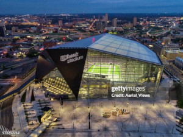
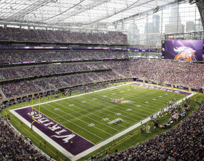

O Minnesota Vikings é um time profissional de futebol americano baseado em Minneapolis, Minnesota. Os Vikings se juntaram à National Football League como uma equipe de expansão em 1960. A equipe compete na NFC North.
Inspirado nos grandes exploradores e guerreiros Vikings, o Minnesta Vikigns aderiu está identidade medieval no seu logotipo 1
Já o logo secundário do Minnesota, é basicamente o seu nome em si, com uma formatação bastante imponente e que visa resaltar a cultura dos capacetes vikings usados pelos antigos guerreiros da época, com detalhes nas letas "V", "K", "N" e "G".
O U.S. Bank Stadium é o estádio de futebol americano no centro da cidade de Minneapolis, Minnesota, nos Estados Unidos. É a casa do Minnesota Vikings da National Football League desde 2016.
